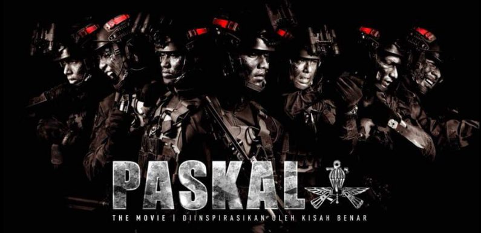
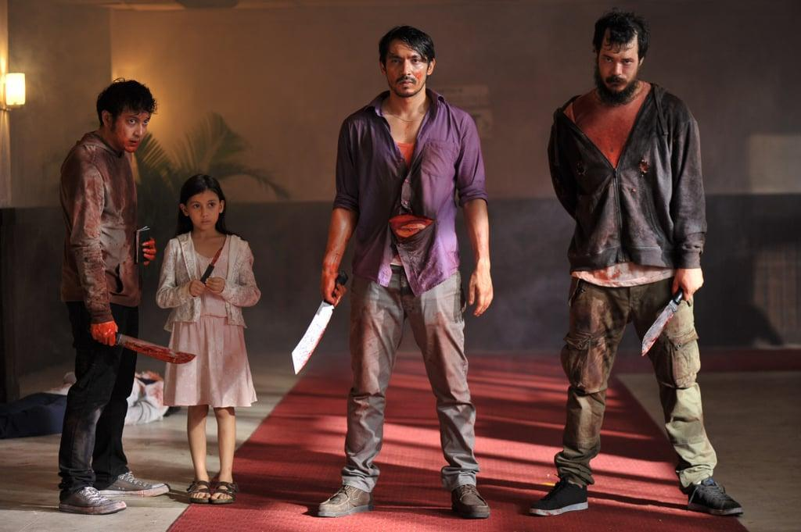
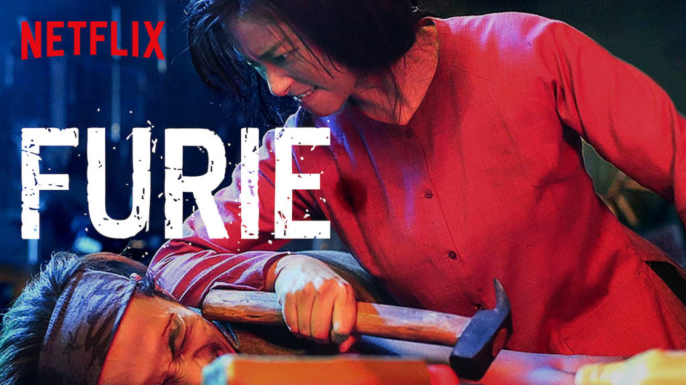

Películas de acción
Paskal
Entre la espada y la pared, Arman se encuentra en un dilema entre servir a sus compatriotas o cuidar de la salud de su madre. Ella, atormentada por la muerte de su esposo, quien murió sirviendo al país, teme que su hijo tenga el mismo destino.
La noche nos persigue
Ito, un hombre que trabajaba para la mafia, tendrá que proteger a una joven y escapar de su anterior banda criminal en una violenta batalla en las calles de Jakarta.
Furie
Hai Phuong es una madre soltera y ex gánster, que decide dejar si pasado atrás y se muda a Saigon. Cuando uno de los matones locales decide ella, secuestra a su hija, lo que desencadena una furiosa e implacable búsqueda , Hai volverá a usar increibles habilidades marciales para recuperar a su hija.